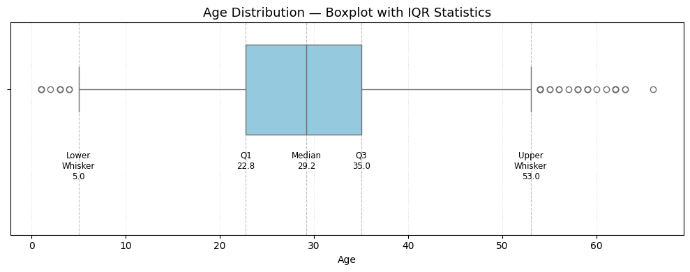
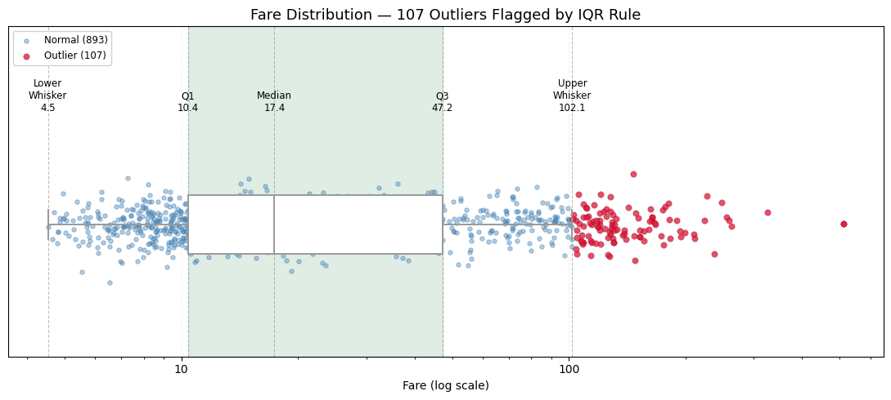

In [1]cell 0
import pandas as pd import numpy as np import matplotlib.pyplot as plt import seaborn as sns
In [2]cell 1
dataset = pd.read_csv("../../_shared_data/titanic_sample_1000.csv")
dataset.head(3)Output
PassengerId Survived Pclass Sex Age SibSp Parch Fare Embarked 0 1 1 2 male 21.0 0 0 40.82 S 1 2 0 3 male 17.0 1 0 10.52 S 2 3 0 3 female 23.0 1 0 12.33 S
In [3]cell 2
dataset.isnull().sum()
Output
PassengerId 0 Survived 0 Pclass 0 Sex 0 Age 190 SibSp 0 Parch 0 Fare 0 Embarked 3 dtype: int64
In [4]cell 3
dataset["Age"] = dataset["Age"].fillna(dataset["Age"].mean())
In [5]cell 4
dataset.isnull().sum()
Output
PassengerId 0 Survived 0 Pclass 0 Sex 0 Age 0 SibSp 0 Parch 0 Fare 0 Embarked 3 dtype: int64
In [6]cell 5
np.percentile(dataset["Age"],25), np.percentile(dataset["Age"],75)
Output
(np.float64(22.75), np.float64(35.0))
In [7]cell 6
dataset["Age"].min() , dataset["Age"].max()
Output
(np.float64(1.0), np.float64(66.0))
In [8]cell 7
np.percentile(dataset["Age"],50) , dataset["Age"].median()
Output
(np.float64(29.18641975308642), np.float64(29.18641975308642))
In [9]cell 9
dataset.describe()
Output
PassengerId Survived Pclass Age SibSp \
count 1000.000000 1000.000000 1000.00000 1000.00000 1000.000000
mean 500.500000 0.302000 2.28400 29.18642 0.438000
std 288.819436 0.459355 0.84502 10.54239 0.805484
min 1.000000 0.000000 1.00000 1.00000 0.000000
25% 250.750000 0.000000 1.00000 22.75000 0.000000
50% 500.500000 0.000000 3.00000 29.18642 0.000000
75% 750.250000 1.000000 3.00000 35.00000 1.000000
max 1000.000000 1.000000 3.00000 66.00000 4.000000
Parch Fare
count 1000.00000 1000.000000
mean 0.36000 39.147900
std 0.73276 49.681657
min 0.00000 4.530000
25% 0.00000 10.397500
50% 0.00000 17.385000
75% 0.00000 47.207500
max 3.00000 512.330000In [10]cell 10
Q1 = dataset["Age"].quantile(0.25)
Q3 = dataset["Age"].quantile(0.75)
IQR = Q3 - Q1
median = dataset["Age"].median()
lower_whisker = dataset["Age"][dataset["Age"] >= Q1 - 1.5 * IQR].min()
upper_whisker = dataset["Age"][dataset["Age"] <= Q3 + 1.5 * IQR].max()
fig, ax = plt.subplots(figsize=(10, 4))
sns.boxplot(x="Age", data=dataset, color="skyblue", ax=ax)
stats = {
"Lower\nWhisker": lower_whisker,
"Q1": Q1,
"Median": median,
"Q3": Q3,
"Upper\nWhisker": upper_whisker,
}
ax.set_ylim(-1.3, 0.6)
for label, value in stats.items():
ax.axvline(value, color="gray", linestyle="--", linewidth=0.8, alpha=0.5)
ax.text(value, -0.55, f"{label}\n{value:.1f}", ha="center", va="top", fontsize=8.5)
ax.set_title("Age Distribution — Boxplot with IQR Statistics", fontsize=13)
ax.set_xlabel("Age")
ax.grid(axis="x", linestyle=":", alpha=0.4)
plt.tight_layout()
plt.show()
In [11]cell 11
import matplotlib.ticker as mticker
Q1 = dataset["Fare"].quantile(0.25)
Q3 = dataset["Fare"].quantile(0.75)
IQR = Q3 - Q1
median = dataset["Fare"].median()
lower_bound = Q1 - 1.5 * IQR
upper_bound = Q3 + 1.5 * IQR
lower_whisker = dataset["Fare"][dataset["Fare"] >= lower_bound].min()
upper_whisker = dataset["Fare"][dataset["Fare"] <= upper_bound].max()
is_outlier = (dataset["Fare"] < lower_bound) | (dataset["Fare"] > upper_bound)
rng = np.random.default_rng(42)
y_jitter = rng.normal(0, 0.06, size=len(dataset))
fig, ax = plt.subplots(figsize=(11, 5))
# Shade the IQR band
ax.axvspan(Q1, Q3, color="seagreen", alpha=0.15, zorder=0)
# Jittered strip of every fare, colored by outlier status
ax.scatter(dataset["Fare"][~is_outlier], y_jitter[~is_outlier], s=14, alpha=0.4,
color="steelblue", label=f"Normal ({(~is_outlier).sum()})", zorder=1)
ax.scatter(dataset["Fare"][is_outlier], y_jitter[is_outlier], s=28, alpha=0.75,
color="crimson", edgecolor="darkred", linewidth=0.3,
label=f"Outlier ({is_outlier.sum()})", zorder=2)
# Boxplot drawn on top, narrow and white so the points underneath still read
sns.boxplot(x=dataset["Fare"], ax=ax, width=0.22, color="white", linewidth=1.4,
fliersize=0, zorder=3)
stats = {
"Lower\nWhisker": lower_whisker,
"Q1": Q1,
"Median": median,
"Q3": Q3,
"Upper\nWhisker": upper_whisker,
}
for label, value in stats.items():
ax.axvline(value, color="gray", linestyle="--", linewidth=0.8, alpha=0.5, zorder=0)
ax.text(value, 0.42, f"{label}\n{value:.1f}", ha="center", va="bottom", fontsize=8.5)
ax.set_xscale("log")
ax.xaxis.set_major_formatter(mticker.ScalarFormatter())
ax.xaxis.set_minor_formatter(mticker.NullFormatter())
ax.set_ylim(-0.5, 0.75)
ax.set_yticks([])
ax.set_xlabel("Fare (log scale)")
ax.set_title(f"Fare Distribution — {is_outlier.sum()} Outliers Flagged by IQR Rule", fontsize=13)
ax.legend(loc="upper left", fontsize=8.5, framealpha=0.9)
ax.grid(axis="x", which="major", linestyle=":", alpha=0.3)
plt.tight_layout()
plt.show()